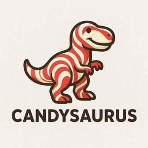

Trade Mark Journal No.2026/006 6 February 2026
UK00004325547 16 January 2026 (30)

- Class 30
- Bags of sweets; Sweet platters; sweets jars; sweet bowls; boxes of sweets; sweets gift packages; Sweets; Candies [sweets]; Sweets [candy]; Chocolate sweets; Sugar-free sweets; Caramels [sweets]; Sugarfree sweets; Sugarless sweets; Peppermint sweets; Sweets (Peppermint -); Sweets (Non-medicated -) being acidulated caramel sweets; Gum sweets; Boiled sweets; Sweets (Non-medicated -); Sweets (Non-medicated -) in the nature of sugar confectionery; Foamed sugar sweets; Sweets (Non-medicated -) in the nature of chocolate eclairs; Sweets (Non-medicated -) in the nature of toffees; Peppermint sweets [other than for medicinal use]; Gum sweets (Non-medicated -); Mint-based sweets; Sweets (candy), candy bars and chewing gum; Chocolate candies; Chewing sweets (Non-medicated -); Mint flavoured sweets (Non-medicated -); Sweets (Non-medicated -) in the nature of caramels; Lollipops [confectionery]; Candies; Sweets (Non-medicated -) in the nature of fudge; Caramels [candies]; Sherbets [confectionery]; Sweets (Non-medicated -) in the nature of nougat; Sugarless candies; Chocolate-coated sugar confectionery; Chocolate confectionery; Chocolate confections; Chocolate candy with fillings; Chocolates; Chocolate for confectionery and bread; Sugar candy [for food]; Sugar confectionery; Flavoured sugar confectionery; Chewing sweets (Non-medicated -) having liquid fruit fillings; Sugar candies (Non-medicated -); Fruit jellies [confectionery]; Jellies (Fruit -) [confectionery]; Chocolate flavoured confectionery; Mint based sweets [non-medicated]; Sugar-free mint candies; Chocolate confectionary; Non-medicated confectionery candy; Fruit confectionery; Caramels [candy]; Liquorice [confectionery]; Sweets (Non-medicated -) being honey based; Sherbet [confectionery]; Chocolate confectionery containing pralines; Candy [sugar]; Chocolate confectionery products; Confectionery chocolate products; Pastilles [confectionery]; Boiled sugar confectionery; Gummy candies; Confectionery; Liquorice flavoured confectionery; Confectionery items coated with chocolate; Truffles [confectionery]; Fondants [confectionery]; Peppermint for confectionery; Non-medicated sugar confectionery; Sugar confectionery (Non-medicated -); Sherbets [confectionery ices]; Milk chocolates; Fruit jelly candy; Mints [candies, non-medicated]; Candy mints; Candy; Candy coated confections; Chocolate confectionery having a praline flavour; Mallows [confectionery]; Gelatin-based chewy candies.
lee morris
Samantha Morris